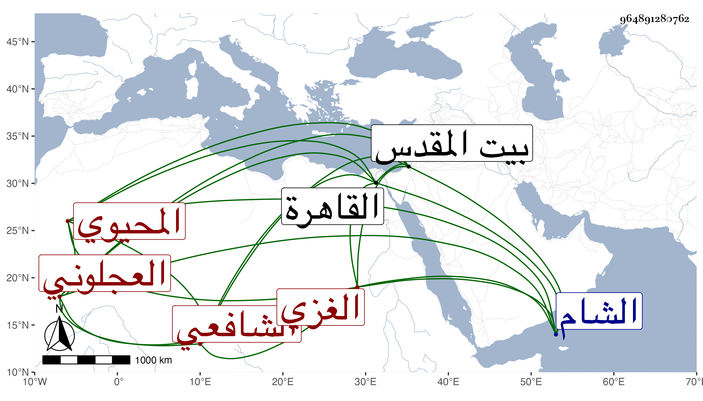

0902Sakhawi.DawLamic.ITO20230111-ara1.EIS1600.964891280762
Biography ID: 964891280762
762
عبد القادر بن محمد بن جبريل المحيوي العجلوني الأصل الغزي الشافعي ويعرف بابن جبريل . حفظ الحاوي وغيره ولازم بلديه الشمس بن الحمصي وهو الذي شفعه بعد أن كان حنفيا وانتفع به ثم دخل الشام وأخذ عن الزين خطاب وغيره ، وتميز في الفضيلة وناب في قضاء بلده عن شيخه ثم وثب عليه واستقل بالقضاء في سنة ثلاث وسبعين وتزوج بزوجته ولم يحمد في كليهما بل لم يرج له أمر ، ولم يلبث أن امتحن ببعض الأسباب وأودع المقشرة مدة ثم خلص وولي قضاء القدس ثم انفصل وقدم القاهرة فناب عن الزين زكريا وجلس في حانوت الجمالية ولكنه لم يظفر بطائل فرجع إلى بلده بطالا .
